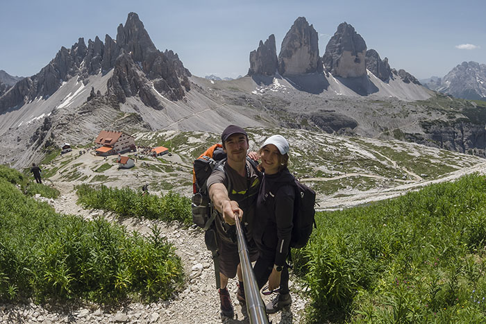
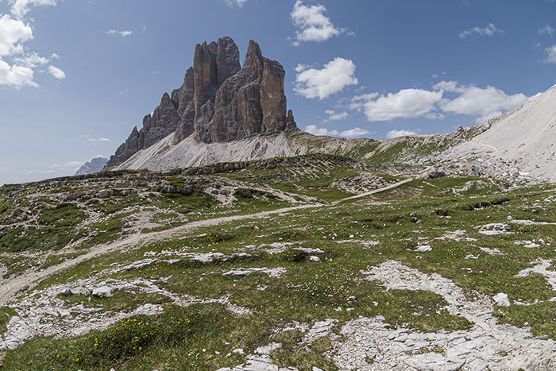
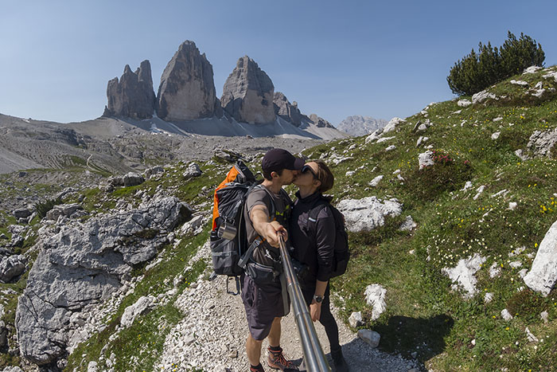
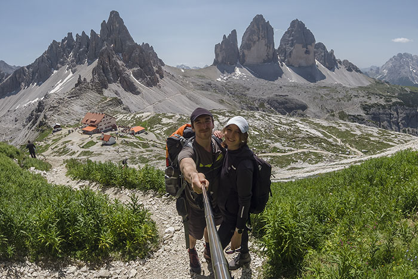
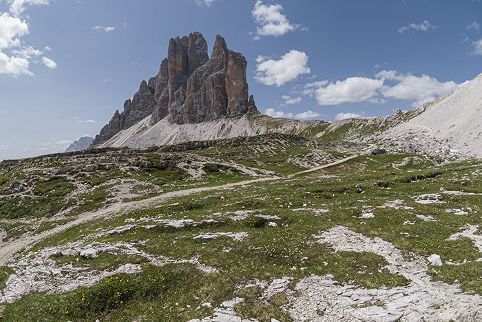
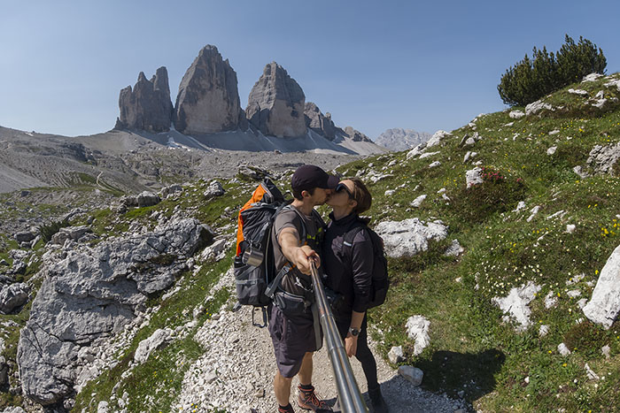
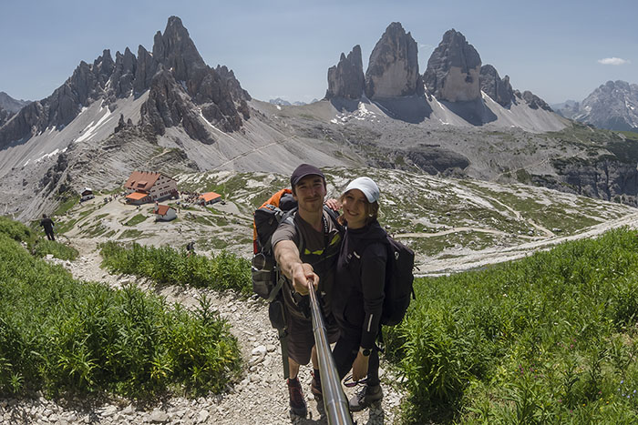
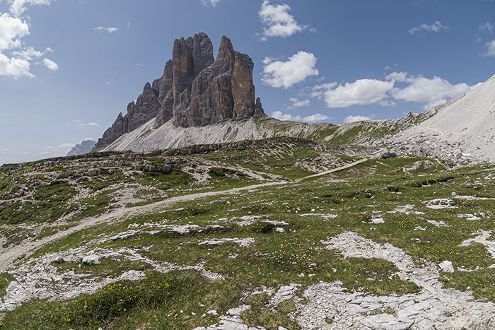
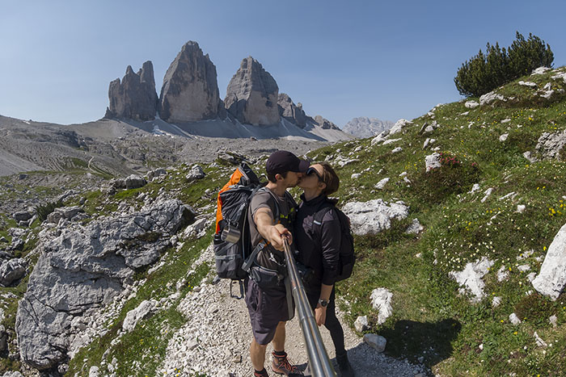

Už len 5 minút, hovoril som si v duchu, keď som pozeral na hodinky. Toľko nás delilo od konca práce a začiatku zaslúženého voľna. Ten pocit radosti bol ešte umocnený faktom, že už o pár hodín neskôr sme mali naše autíčko zaparkovať na mieste, ktoré je už dlhú dobu jedným z našich cestovateľských snov. Priamo pod jedným z najznámejších symbolov Dolomitov, pod impozantnými Lavaredskými štítmi. Zbalili sme sa už večer pred tým, takže po príchode na izbu sme sa iba narýchlo osprchovali, najedli, skontrolovali, či máme všetko a mohlo sa vyraziť.
Po necelých troch hodinách cesty sme zaparkovali pri krásnom jazere Lago di Misurina, iba kúsok od našej finálnej zastávky. Neodolali sme krátkej prechádzke, ktorá, hlavne vďaka mne, sa trošku pretiahla. "Poďme ešte tam, tam to je pekné", "Vau, ešte kúsok tamto", naťahoval som po robote unavenú Lucku a namiesto krátkej prechádzky, sme obkrúžili celé jazero.
Z jazera sme sa pobrali na parkovisko priamo pod štítmi. Po 20 minútach a jednej krátkej zastávke pred mýtnou bránou sme boli konečne na mieste. Pred výletmi si nerobíme nejaké veľké prieskumy a tak nám na parkovisku vyrazil dych neskutočný výhľad, na ktorý sme neboli pripravený. Po zaparkovaní a pripravení auta na prenocovanie sme si neodpustili ešte jednu krátku prechádzku po parkovisku. Bol to naozaj dlhý deň a tak po príchode k autu sme sa hneď uložili do "postieľky" a za malú chvíľku sme už chrápali. Teda Lucka, ja nechrápem.
Budík nás mal zobudiť 10 minút pred východom Slnka. Nebol ani potrebný, pretože som sa zobudil minútu pred ním. Lucke sa spočiatku veľmi nechcelo, no tá nádhera ju nakoniec postavila z postele. Slnko postupne začalo zalievať krajinu. Ako prvá sa svetelných lúčov dotkla v diaľke hora Punta Sorapiss. Svetlo sa postupne približovalo k nám a pohltilo aj Monte Cristallo. Ako posledné mu do cesty prišli vrcholky nádherných štítov Cadini di Misurina.
Pri takomto pohľade nám raňajky chutili o niečo viac ako obvykle. Sedelo sa nám dobre, no bolo treba sa už aj pohnúť a vyraziť kým sa sem nenahrnú davy turistov. Keďže Lucka nemusela riešiť dilemu, čo na seba, celkom rýchlo sme sa obliekli a zbalili.
Plán výletu bol obísť štíty dookola a vychutnať si ich tak z každého uhla. Podľa mapy nás čakala nenáročná trasa s minimálnym prevýšením. Keďže drvivá väčšina turistov sa rozhodla začať východnou stranou, my sme sa vydali na západ a urobili sme dobre. Po dlhú dobu sme si vďaka tomu mohli vychutnať ničím nerušený pokoj prebúdzajúcej sa prírody.
Prvých 5 kilometrov nám robili spoločnosť iba domáci štvornohí obývatelia, ktorí svojimi zvončekmi vyhrávali ukľudňujúce melódie. Dolomitské kravičky boli veľmi hravé a priateľské, tak sme sa zastavili trochu, ako Lucka vraví, pomojkať.
Nikam sme sa neponáhľali, mali sme veľa prestávok a prvú dlhšiu sme si spravili pri malých jazierkach Sorgenti Fiume Rienza. Tu sa nám štíty po prvý krát ukázali v plnej kráse.
Ako sme pokračovali ďalej, pribúdalo stále viac a viac turistov až kým sa nakoniec turistické chodníčky nepremenili na jedno obrovské mravenisko plné ľudí. Miestom, kde to žilo najviac, bola chata Dreizinnenhütte. Ak Vám ten názov neznie taliansky, nemýlite sa. V južnom Tirolsku totiž až dve tretiny ľudí hovoria nemecky. Preto, aj veľa miest má nemecký názov. Pri chate bola plnka ako v obchodnom centre, takže sme popri nej len rýchlo prefrčali. Zložili sme sa o kúsok ďalej na peknej trávnatej plošinke, z ktorej sme mali neskutočný výhľad a prekvapivo aj pokoj od ľudí. Skvelé miesto na obed. Keďže sme boli v Taliansku, uvarili sme si cestovinku. Vôbec sa nám odtiaľ nechcelo a tak sme si v kľude vypili aj kávu.
Najedení a oddýchnutí sme boli pripravení pobrať sa ďalej. Namierili sme si to smerom k hore Sasso di Sesto, pod ňou sa totiž nachádza pekná jaskynka so super výhľadom nie len na Tre Cime, ale aj na vedľajší kopec Forcella del Camoscio. Myslím, že tu sú slová zbytočné, ten výhľad bol neskutočný.
Jaskyňa prilákala veľa ľudí a tak sme si chvíľu počkali, kým sa nám konečne podarilo spraviť zopár záberov.
Pohľad na Tre Cime je naozaj úžasný z každej strany. Takýto pohľad sa nám naskytol pri návrate k autu západnou stranou. Naživo tam bol trochu väčší ruch, vyretušovať všetkých turistov mi dalo zabrať.
Lucka a za ňou vrch Croda dei Toni. Bola to naša posledná zachádzka na tomto výlete. Niečo malé sme tu zahryzli a pokračovali sme ďalej.
Od auta nás delilo už iba asi 20 minút chôdze. Po celý tento čas sme mali pred sebou úžasný výhľad na skupinu štítov Cadini di Misurina. Bol som už celkom hladný, takže hlavnou témou na rozhovor bolo jedlo. Museli sme si zodpovedať 2 dôležité otázky. Kam sa pôjdeme najesť a čo si dáme. Otázky boli zodpovedané a tak po príchode k autu sme sa zbytočne nezdržiavali. Iba sme sa prezliekli a hneď vyrazili. Parkovisko pod Tre Cime nieje zadarmo. Podľa aktuálneho cenníka sme mali platiť 30 eur. Došli sme k mýtnej bráne, vložil som lístok do automatu a zostal som prekvapený, pretože brána sa okamžite zdvihla. Do dnešného dňa nechápem, čo sa tam stalo. Ubehol od vtedy už nejaký čas, no ja ešte stále čakám, či mi náhodou poštou nepríde nejaká obálka so šekom na zaplatenie 😁
Najesť sme sa šli naspať k Lago di Misurina, do Pizzerie Edelweiss. V google mapách mala samé pozitívne recenzie, takže nebolo o
čom. Bola to naša prvá pizza v Taliansku, odvtedy sme ich mali ešte pár a môžem s kľudom prehlásiť, že Taliani ju vedia pripraviť
naozaj dokonalo. Aj "najhoršia" pizza v Taliansku bola na míle vzdialená od všetkých, ktoré som pojedol v iných krajinách a že ich
teda bolo 😁 Nasledujúci deň sme mali v pláne navštíviť vodopády Cascate di Riva a tak sme sa vybrali na cestu. Keďže do západu
Slnka zostávalo ešte niekoľko hodín, rozhodli sme sa cestou navštíviť aj neďaleké jazero Lago di Braies. Pri tej horúčave a
krištáľovo čistej vode sme neodolali a šli sme sa osviežiť. Vykúpaní a unavení po dlhom dni sme sa vrátili k autu a zamierili
priamo na parkovisko k už spomínaným vodopádom. Ale o tom až nabudúce 🙂 Na záver ešte prikladám záznam našej trasy
ZÁZNAM TRASY


